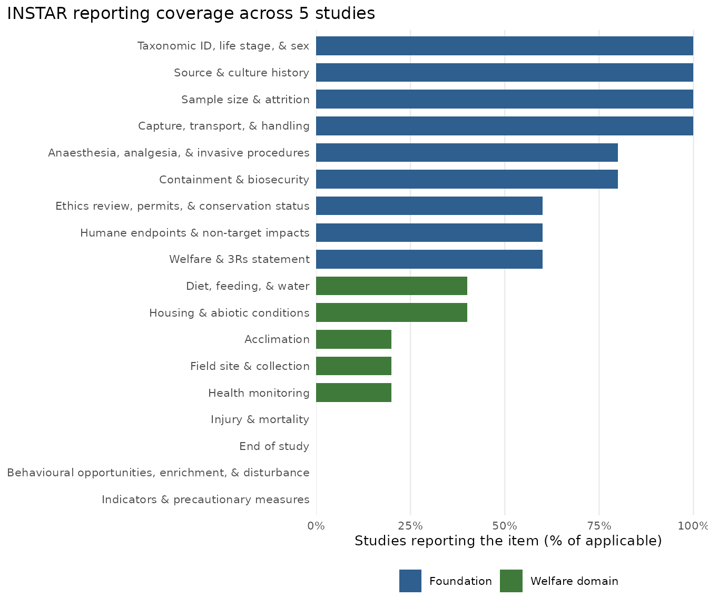

The other vignette covers one study. This one covers many: reading a set of completed sheets, or a set of scored papers, and asking what a field reports and what it does not.
There are two ways in, depending on whether the studies have INSTAR sheets of their own.
-
Prospective. Studies deposit completed sheets, and
a corpus is just a folder of them. Read them with
read_instar(). -
Retrospective. The studies predate the framework,
so someone reads the papers and scores them by hand into a table. Hand
that to
audit_from_matrix().
Both produce the same instar_audit object, so everything
downstream is identical.
Reading a folder of sheets
read_instar() takes a file, a directory, or a vector of
either. Let’s build a small corpus to work with, so the examples
run.
corpus_dir <- file.path(tempdir(), "supplements")
dir.create(corpus_dir, showWarnings = FALSE)
make_sheet <- function(n_reported, title, journal, doi) {
# instar_set() takes item_id = value pairs. Building them programmatically
# means assembling a named list and using do.call().
ids <- instar_items$item_id[seq_len(n_reported)]
filled <- stats::setNames(as.list(rep("Reported in the paper", length(ids))),
ids)
items <- do.call(instar_set, c(list(instar_template()), filled))
rep <- instar_report(items, paper = list(
title = title, authors = "Author et al. (2026)",
journal = journal, doi = doi
))
slug <- gsub("[^A-Za-z0-9]+", "-", doi)
write_report(rep, file.path(corpus_dir, paste0(slug, ".csv")))
}
invisible(Map(make_sheet,
n_reported = c(4, 9, 14, 6, 11),
title = paste("Study", 1:5),
journal = c("J Alpha", "J Alpha", "J Beta", "J Beta", "J Beta"),
doi = paste0("10.1234/study", 1:5)))
list.files(corpus_dir)
#> [1] "10-1234-study1.csv" "10-1234-study2.csv" "10-1234-study3.csv"
#> [4] "10-1234-study4.csv" "10-1234-study5.csv"Now read them:
corpus <- read_instar(corpus_dir)
#> Reading 5 files...
#> | | | 0% | |============== | 20% | |============================ | 40% | |========================================== | 60% | |======================================================== | 80% | |======================================================================| 100%
#> ✔ Imported 5 sheets.
corpus
#> <instar_corpus>
#> 5 sheets, INSTAR v1.0
#> median coverage 50% (range 22-78%)
#> summary() for per-sheet coverage; instar_audit() for item-level.A corpus is a named list of reports underneath, so
lapply(), Filter(), [ and friends
all work on it. summary() gives one row per sheet:
summary(corpus)[, c("study", "title", "journal", "reported", "percent_reported")]
#> study title journal reported percent_reported
#> 1 10.1234/study1 Study 1 J Alpha 4 22.22222
#> 2 10.1234/study2 Study 2 J Alpha 9 50.00000
#> 3 10.1234/study3 Study 3 J Beta 14 77.77778
#> 4 10.1234/study4 Study 4 J Beta 6 33.33333
#> 5 10.1234/study5 Study 5 J Beta 11 61.11111When a file will not read
Pointed at a real directory you will meet malformed files: a deleted
column, a semicolon-delimited export, a stray spreadsheet someone left
in the folder. read_instar() does not stop on those. It
warns, skips them, and records what went wrong.
writeLines(c("this,is,not", "an,instar,sheet"),
file.path(corpus_dir, "junk.csv"))
corpus <- suppressWarnings(read_instar(corpus_dir))
#> Reading 6 files...
#> | | | 0% | |============ | 17% | |======================= | 33% | |=================================== | 50% | |=============================================== | 67% | |========================================================== | 83% | |======================================================================| 100%
#> ✔ Imported 5 sheets.
#> ✖ 1 failed.
attr(corpus, "failed")
#> file
#> 1 /tmp/RtmpjMlo3F/supplements/junk.csv
#> error
#> 1 \033[1m\033[22m\033[34m/tmp/RtmpjMlo3F/supplements/junk.csv\033[39m is missing required columns:\n\033[32mitem_id\033[39m and \033[32mvalue\033[39m.\n\033[36mℹ\033[39m A sheet needs an \033[32mitem_id\033[39m column and a \033[32mreport\033[39m (or \033[32mvalue\033[39m) column.Getting the other five sheets plus a list of what to go and fix is more useful than getting nothing.
Framework versions
Every sheet records the version it was completed against. A corpus that mixes versions is warned about, because coverage across them is not comparable: an item missing from half the sheets because it did not exist yet is not the same as an item those studies failed to report.
If you do have a mix, split before auditing:
s <- summary(corpus)
v1 <- corpus[s$version == "1.0"]
instar_audit(v1)Auditing
instar_audit() takes the corpus, or the path
directly:
audit <- instar_audit(corpus)
audit
#> <instar_audit>
#> 5 studies, 18 framework items
#> median study coverage 50% (range 22-78%)
#>
#> Least often reported:
#> 0% Injury & mortality
#> 0% End of study
#> 0% Behavioural opportunities, enrichment, & disturbance
#> 0% Indicators & precautionary measures
#> 20% Acclimation
#>
#> summary() for all items; summary(by = ) to group; plot() to draw.summary() gives one row per framework item:
head(summary(audit), 4)
#> item_id item domain group
#> 1 subjects_taxon Taxonomic ID, life stage, & sex Subjects foundation
#> 2 subjects_source Source & culture history Subjects foundation
#> 3 subjects_n Sample size & attrition Subjects foundation
#> 4 proc_handling Capture, transport, & handling Procedures foundation
#> n_studies reported not_reported not_applicable applicable percent_reported
#> 1 5 5 0 0 5 100
#> 2 5 5 0 0 5 100
#> 3 5 5 0 0 5 100
#> 4 5 5 0 0 5 100The columns worth knowing: applicable is the
denominator, excluding studies that marked the item not applicable, and
percent_reported is reported / applicable. An
item that genuinely does not apply to a study is never counted against
it.
Which items does this literature handle worst?
s <- summary(audit)
head(s[order(s$percent_reported), c("item", "reported", "applicable",
"percent_reported")], 5)
#> item reported applicable
#> 15 Injury & mortality 0 5
#> 16 End of study 0 5
#> 17 Behavioural opportunities, enrichment, & disturbance 0 5
#> 18 Indicators & precautionary measures 0 5
#> 12 Acclimation 1 5
#> percent_reported
#> 15 0
#> 16 0
#> 17 0
#> 18 0
#> 12 20Grouping
Any study-level column can be a grouping variable. For a corpus read
from sheets that means anything the reserved rows carry —
journal, doi, version — plus
folder, the directory each sheet came from.
by_journal <- summary(audit, by = "journal")
subset(by_journal, item_id == "subjects_taxon")
#> journal item_id item domain n_studies
#> 1 J Alpha subjects_taxon Taxonomic ID, life stage, & sex Subjects 2
#> 19 J Beta subjects_taxon Taxonomic ID, life stage, & sex Subjects 3
#> reported applicable percent_reported
#> 1 2 2 100
#> 19 3 3 100folder is the useful one when a corpus is filed into
directories that mean something. Read recursively and the structure
comes through:
corpus <- read_instar("corpus/", recursive = TRUE)
summary(instar_audit(corpus), by = "folder")Per-study coverage
audit$studies is one row per study, which is what you
want for questions about papers rather than items:
Plotting
plot(audit)
autoplot() returns the ggplot object instead of drawing
it, so you can modify it. plot(audit, by = "journal")
facets.
Studies with no sheet
Which is every study published before the framework existed. Score
the papers into a wide table: one row per paper, one column per
item_id.
scores <- data.frame(
doi = c("10.1/a", "10.1/b", "10.1/c", "10.1/d"),
journal = c("J Alpha", "J Alpha", "J Beta", "J Beta"),
year = c(2024, 2025, 2025, 2026),
subjects_taxon = c("Y", "Y", "Y", "Y"),
subjects_n = c("Y", "N", "N", "Y"),
env_housing = c("Y", "Y", "NA", "N"),
env_field = c("NA", "NA", "Y", "-"),
stringsAsFactors = FALSE
)
audit2 <- audit_from_matrix(scores, id = "doi")
#> ℹ 14 framework items not present in `scores` and left out of the audit:
#> subjects_source, proc_handling, proc_anaesthesia, proc_biosecurity,
#> ethics_review, ethics_endpoints, ethics_statement, nutrition_diet,
#> env_acclimation, health_monitoring, health_injury, fate_end,
#> behaviour_general, and affect_indicators.
summary(audit2)[, c("item", "reported", "applicable", "percent_reported")]
#> item reported applicable percent_reported
#> 1 Taxonomic ID, life stage, & sex 4 4 100.00000
#> 2 Sample size & attrition 2 4 50.00000
#> 3 Housing & abiotic conditions 2 3 66.66667
#> 4 Field site & collection 1 1 100.00000Three things are happening there worth spelling out.
Cell values are read leniently, because scoring
sheets are made by people. Y, yes,
TRUE, 1 and C mean reported;
N, no, FALSE and 0
mean not; NA, N/A, - and blanks
mean not applicable. Anything unrecognised warns rather than being
silently counted.
Non-item columns become study metadata.
journal and year are not
item_ids, so they ride along and are immediately available
for grouping:
subset(summary(audit2, by = "year"), item_id == "subjects_n")
#> year item_id item domain n_studies reported
#> 2 2024 subjects_n Sample size & attrition Subjects 1 1
#> 6 2025 subjects_n Sample size & attrition Subjects 2 0
#> 10 2026 subjects_n Sample size & attrition Subjects 1 1
#> applicable percent_reported
#> 2 1 100
#> 6 2 0
#> 10 1 100Items absent from the table are left out, not counted as unreported. The message above says which. Recording an unscored item as a failure to report would assert something the scoring never checked.
Choosing the identifier
id should name a column that identifies every row. If it
does not, you get told rather than finding out later:
incomplete <- data.frame(
doi = c("10.1/a", "", ""), # DOI extraction failed for two
subjects_taxon = c("Y", "N", "Y"),
stringsAsFactors = FALSE
)
audit3 <- suppressMessages(audit_from_matrix(incomplete, id = "doi"))
#> Warning: Duplicate study identifier in doi: "<blank>".
#> ℹ They have been made unique, so each row still counts as its own study.
#> ! A blank id usually means the column is incomplete rather than that those rows
#> are duplicates: pick a column that identifies every row.
audit3$n
#> [1] 3That warns about the blank ids and still counts three studies. It is a real case: in the survey reported in the INSTAR paper, DOI extraction failed for 25 of 150 PDFs, and keying on DOI would have collapsed them into one repeated blank identifier. The fix was to key on a per-file slug instead and keep DOI as metadata.
A note on what this is for
The point of depositing the sheet as structured text rather than only as a figure is that the second direction becomes possible at all. Once sheets are routinely deposited, questions like which items a field handles worst, whether reporting differs between laboratory and field work, or whether it improves after a journal adopts the framework, are a matter of reading files rather than of re-reading papers.